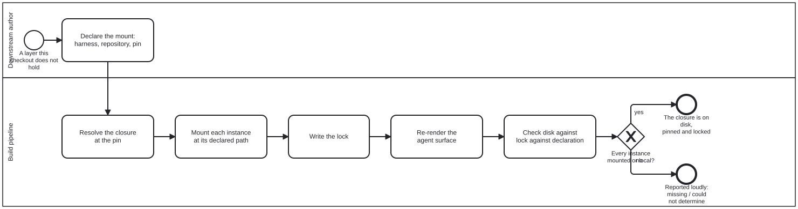

Generated from
cat-harness/processes/kg/mount-dependency.bpmnbygen-processes-viz.ts— do not edit here. All processes
Remote-mount a dependency
Process_MountDependency · strict · 6 step(s)
Laying a harness — and every instance it needs — down from another repository at a pinned commit, as declared directories, with a lock that says exactly what arrived.
You are in this process whenever a folio or harness needs a layer it does not hold: a downstream folio built on a content layer above this harness, a separated instance whose foundation lives elsewhere. The downstream names the harness, its repository and a 40-character pin as a source.remote instance in its root index.config.json (legacy: remoteMounts on its declaration, never both); everything else is read from the harness’s own declaration at that pin.
Every instance reached ends in one of three states — mounted, missing, could-not-determine — and the third is never reported as the first. The skill is remote-mount.

How it connects
- Called by: no call activity names this process
- Calls: none
- Presented on: no docs page section shows this diagram
Lanes — who acts
| lane | role | what it does here |
|---|---|---|
| Downstream author | author | A person decides WHICH harness and WHICH pin, and whether to override a default. Nothing below chooses a pin: a branch name is refused, and so is an abbreviated SHA. |
| Build pipeline | build-pipeline | Mechanical from the declaration on: the same declaration mounts the same bytes in every container, and only an override by id changes where or what. |
Steps
Every one of the 6 step(s) is documented.
| step | lane | skill / sub-process | what it does |
|---|---|---|---|
Declare the mount: harness, repository, pinTask_DeclareMount | Downstream author | remote-mountindex-config | An instance { name, source: { remote: { repository, ref } } } in thedownstream’s root index.config.json, written throughwriteDeclaredMounts. A folio with no index still reads remoteMountson its declaration; both at once is refused. ref is a full40-character commit. Overrides, if any, are keyed by instance name and then by directory id — never by path. The index itself is the index-config skill’s. Decide first whether you want a remote mount at all: reading another graph without holding its code is a SUBSCRIPTION, not a mount. |
Resolve the closure at the pinTask_ResolveClosure | Build pipeline | remote-mount | Fetch the pinned tree (shallow, blobless). Read the harness’s declaration from it; for each needs name, find that instance in the same tree, elsefollow a GITLINK at that tree as a pin into its own repository. A need found in neither is missing; one the downstream already holds is local. Paths and directories come from mountDefaults unless overridden. |
Mount each instance at its declared pathTask_MountInstances | Build pipeline | remote-mount | Sparse checkout of the declaration and the chosen directories, copied to the mount path (by default the instance’s home path, so relative imports and sibling discovery hold). Never onto tracked bytes; never onto a directory no lock says this mount made; never over edits to a previous mount — those are left untouched and reported. |
Write the lockTask_WriteLock | Build pipeline | remote-mount | index.lock.json beside the downstream’s index.config.json (thelegacy <instance>.mount-lock.json is still read, and is renamedonto the new name when rewritten; both present is an error): the pins it was written for, each instance’s repository, SHA and how the pin was found, each directory’s tree digest — and what was NOT mounted, with why, so an offline check cannot read a gap as clean. |
Re-render the agent surfaceTask_RenderAgentSurface | Build pipeline | remote-mountagent-memory | When the lock changed, the layers an agent’s skills and memory are generated from changed with it. mount:remote re-runs the generatorsof what an agent actually reads — skill:commands (.claude/commands/)and agent-memory (.claude/agent-memory/ and the .agents/ copies)— from the checkout root, and a generator that fails fails the run. A re-pin commit therefore carries the new layers AND the surface rendered from them; shipping the first without the second is how folio-assistant#2526 went red on three agent-memory tests. Owner, 2026-10-10: “it may have new agentic skills to re-render and add. same for memory.” |
Check disk against lock against declarationTask_CheckAgainstLock | Build pipeline | remote-mountci-health | mount:remote:check, with no network: the lock’s pins are thedeclaration’s, and every locked directory is on disk and hashes to its digest. Could-not-determine outranks missing, which outranks mounted. |
Decisions
Every one of the 1 decision(s) is documented.
| decision | what decides it | branches |
|---|---|---|
Every instance mounted or local?GW_State | Read off the check’s aggregate state. skipped and local are answers; missing and could-not-determine are not. | yes → The closure is on disk, pinned and locked no → Reported loudly: missing / could not determine |